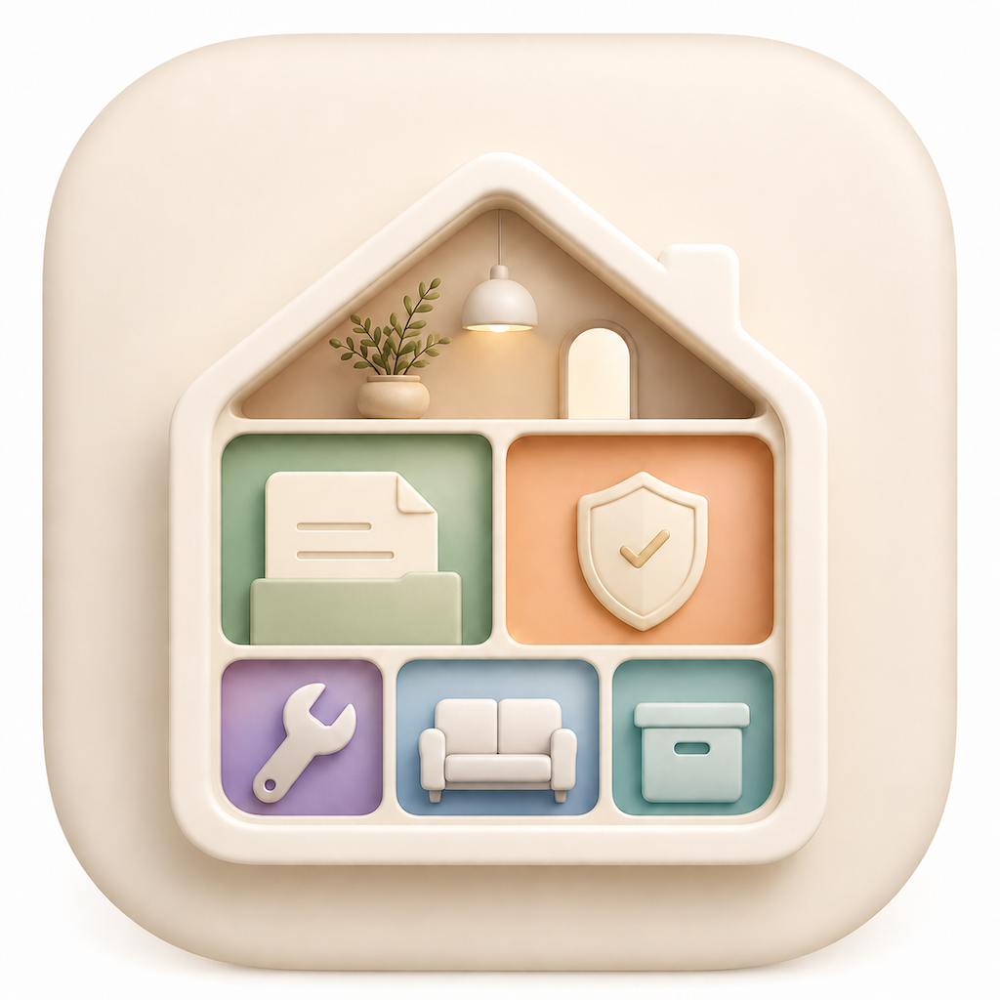
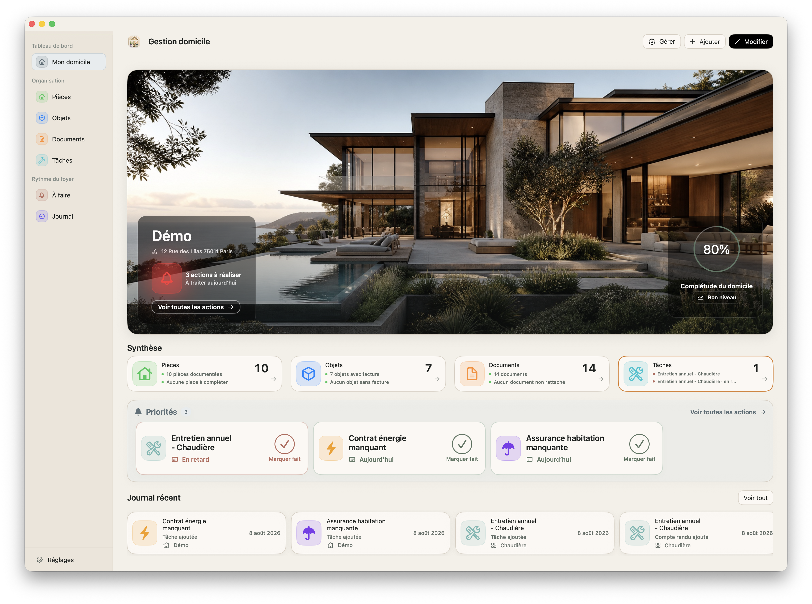

Organisation simple et complète de votre logement
Gestion Domicile est une application macOS pensée pour centraliser et organiser tout ce qui concerne votre logement : pièces, équipements, documents et suivi des travaux. L’objectif est simple : retrouver rapidement une facture, savoir ce qui est couvert par une garantie, planifier l’entretien, et garder un historique clair de votre domicile — au même endroit.

Propriétaires, locataires, familles ou toute personne souhaitant garder une gestion claire et structurée de son logement sans dispersion.
Oui, toutes les données restent stockées localement sur votre Mac.
Utilisez la fonction d’export intégrée à l’application.
Envoyez un email avec description et capture d’écran.
Pour toute question ou problème :
gestiondomicile@icloud.com